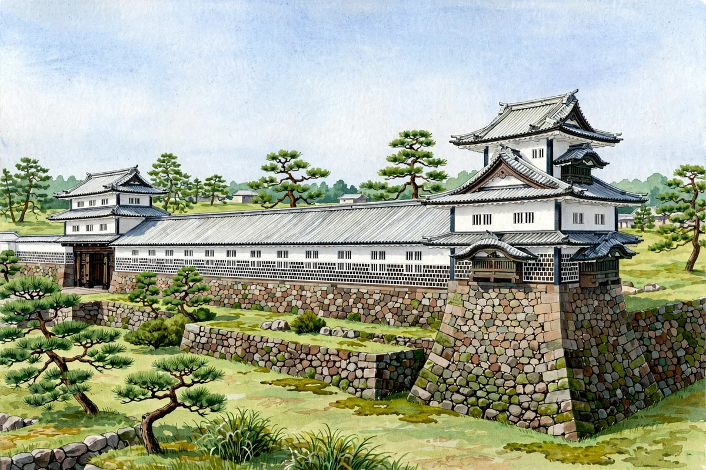

343 Stones, Back in Place — Kanazawa Castle's Ishikawamon-mae Dobashi Wall Is the First of 28 to Be Restored

This is a news article bringing you the latest developments concerning castles and shrines. Source: The Hokkoku Shimbun (November 11, 2026). At Kanazawa Castle, the stone wall of the Ishikawamon-mae Dobashi — the earthen bridge in front of Ishikawa Gate — collapsed in the Noto Peninsula earthquake. On November 10, Ishikawa Prefecture finished rebuilding the stones and removed the sheeting that had covered the site. Of the 28 stone walls damaged in the castle grounds, this wall — the 'face' of the castle — is the first to be fully restored.
At this spot, 343 stones had collapsed across an area about 13 meters wide, 3 meters high, and 5 meters deep. For the restoration, each stone's original position was identified and the stones were recovered, then lifted back into place by crane from the bridge above. To strengthen the wall, the traditional method of packing small stones called guri-ishi behind the facing stones was used.
The work was reported to be finished around November 13, once the top of the wall and the plantings were tidied up. In addition, the collapsed Honmaru South Wall and the Gyokusen'in-maru Southwest Wall, where a marked deformation was found, are scheduled to be rebuilt within the year. The prefecture aims to complete the restoration of all 28 damaged walls by around the end of fiscal 2038 at the earliest.
To help residents understand the long-term project, the prefecture shares progress on the Kanazawa Castle Park website and was reported to be planning guided tours of the site on November 14 and 15. Applications reached the 120-person capacity, and as a special 'only now' experience, participants were offered the chance to write a message freely on a guri-ishi stone.
For exam study, the key point is Kanazawa Castle's stone walls and how their restoration is carried out. Kanazawa Castle was the seat of the Maeda lords of Kaga Domain, and it is known as a 'museum of stone walls' for the variety of walls that remain. Packing guri-ishi behind a wall is one of the traditional methods of supporting a stone wall, and returning each fallen stone to its original place is an essential step in preserving a cultural-property stone wall. See also the related article 'The Craftsmen and Structure Behind Stone Walls: The Anoshu and the Filler Stones.'
When visiting Kanazawa Castle Park, please check the latest open areas in the official guidance. This site's event calendar also lists 'Oshiro EXPO 2026,' Japan's largest castle fans' festival, held in Yokohama on December 19 and 20.
A word from Tsurugi: 343 stones, each one back in its place. The wall has its 'face' back — only one of 28 so far, but a sure first step.
We also share castle and shrine news and exam updates on our official social media. Follow @tabi.kentei.jp on Instagram and Threads to keep up with the latest information.
Related article:Inside the Ishigaki Stone Walls: The Ano-shu Stonemasons and the Hidden Structure That Holds Castles Up
- A Nara-Period Timber Fence Beneath a Heian Wall — Taga Castle Ruins Yield a Clue to Its Changing Ramparts
- Built, Taken Apart, and Built Again — Kumamoto Castle's Iidamaru Five-Story Turret Heads Back to Restoration
- The Red of the 'Red Castle' Has Three Faces — Shuri Castle's Lacquer Holds the Wisdom of Its Restoration
Recommended books for this article
Castle Guide
Samurai Castles: History / Architecture / Visitors' Guides
Hundreds of color photographs and close-up detail on Japan's most important surviving samurai castles — their history, design and military features, with guidance for visitors. The best single companion for castle sightseeing.
View at Barnes & NobleCheck the price at Barnes & Noble
Travel Guide
Lonely Planet Japan (Travel Guide), 19th Edition
Author: Lonely Planet
The standard Japan travel guide in its 19th edition — trip planning, itineraries, transport and on-the-ground detail. The practical backbone for a castle-and-shrine trip.
View at TargetCheck the price at Target
Book links on this page go to the retailers' product pages. Prices and availability are shown on the retailer's page.